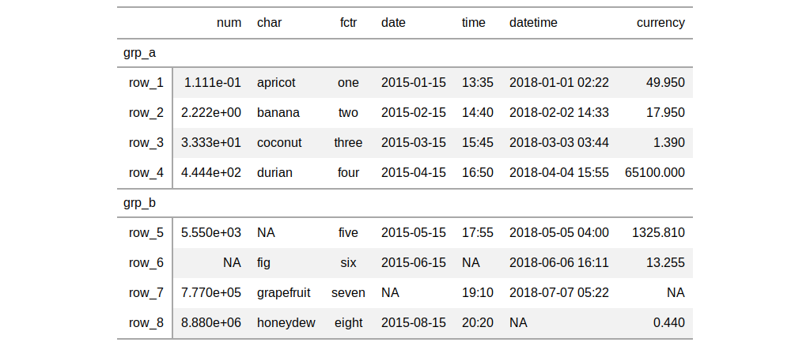
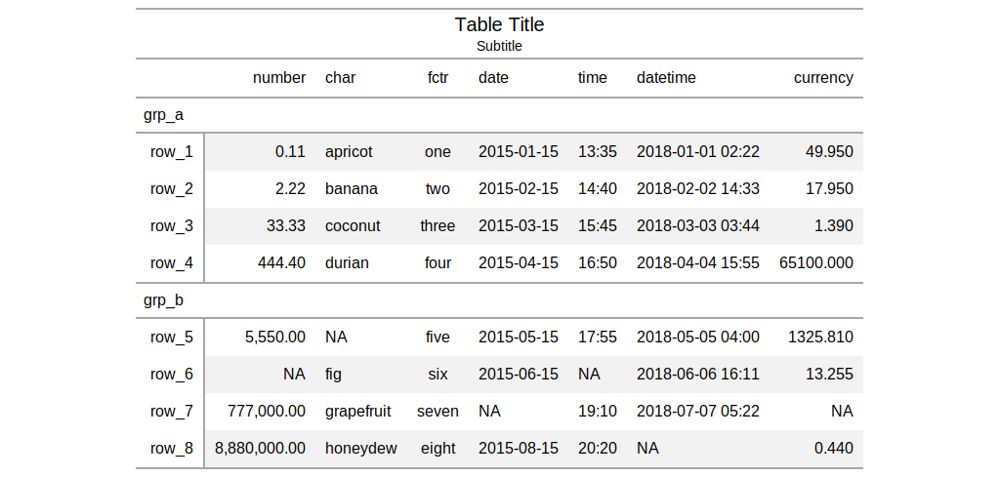

The gt() function creates a gt table object when provided with
table data. Using this function is the first step in a typical gt
workflow. Once we have the gt table object, we can perform styling
transformations before rendering to a display table of various formats (e.g.,
HTML, LaTeX, RTF).
gt(data, rowname_col = "rowname", groupname_col = "groupname", rownames_to_stub = FALSE, stub_group.sep = getOption("gt.stub_group.sep", " - "))
| data | a |
|---|---|
| rowname_col | the column name in the input |
| groupname_col | the column name in the input |
| rownames_to_stub | an option to take rownames from the input |
| stub_group.sep | the separator to use between consecutive group names (a
possibility when providing |
an object of class gt_tbl.
There are a few data ingest options we can consider at this stage. We can
choose to create a table stub with rowname captions using the
rowname_col argument. Further to this, stub row groups can be created
with the groupname_col. Both arguments take the name of a column in
the input table data. Typically, the data in the groupname_col will
consist of categories of data in a table and the data in the
rowname_col are unique labels (perhaps unique across the entire table
or unique within groups).
Row groups can also be created by passing a grouped_df to gt()
by using the dplyr::group_by() function on the table data. In this
way, two or more columns of categorical data can be used to make row groups.
The stub_group.sep argument allows for control in how the row group
label will appear in the display table.


Other table-part creation/modification functions: gt_preview,
tab_footnote, tab_header,
tab_options, tab_row_group,
tab_source_note, tab_spanner,
tab_stubhead_label, tab_style
# Create a table object using the # `exibble` dataset; use the `row` # and `group` columns to add a stub # and row groups tab_1 <- exibble %>% gt( rowname_col = "row", groupname_col = "group" ) # The resulting object can be used # in transformations (with `tab_*()`, # `fmt_*()`, `cols_*()` functions) tab_2 <- tab_1 %>% tab_header( title = "Table Title", subtitle = "Subtitle" ) %>% fmt_number( columns = vars(num), decimals = 2 ) %>% cols_label(num = "number")